Recommendations Redesign, the revised flow
The page you have today, plus two changes. Screens marked Existing are real screenshots. The two new ones are mockups in the same style.
Existing, unchangedNew screenRevised screenRemoved
What I recommend
- Add one screen before the card form. It says what you're starting, what it costs, and when. One button: Continue to payment.
- Make the card screen easier. Apple Pay and Google Pay first. Then a simple timeline: free today, reminder on day 5, charged on day 7.
Why
- The problem is the card form, not the page. Lots of people click Start trial. Most of them leave when they see the card form.
- People need a moment to decide. When we had a plan picker, 6 in 10 who reached checkout entered a card. Without any deciding step, only 2 in 10 do.
- Being clear about the charge date works. Blinkist showed the timeline and promised a reminder. Trial starts went up 23%.
The four reasons
One outside case study that shows the fix works, and three things from our own tests that show we need it.
1. Blinkist, growth.design case study
+23% trial starts
Blinkist asked why people stopped at the card. The top answer: fear of forgetting to cancel and getting charged. So they replaced the sales copy with a plain timeline, "today free, day 5 reminder, day 7 charged," and promised to send the reminder. Trial starts rose 23%. Complaints fell 55%.
This is the model for both new screens: the timeline, the reminder promise, and nothing else on the card screen.
2. Our test: no plan picker
6 in 10 → 2.5 in 10
With a plan picker, 6 in 10 people who reached checkout entered a card. We removed the picker, and it fell to 2.5 in 10. Trials didn't go up.
Why it matters: the picker was the moment people decided. We need to give that moment back, without the picker.
3. Our test: the Narrative page
2 in 10
A trial button on every card sends the most people to checkout we've ever seen. Only 2 in 10 of them enter a card. Buttons pressed after the page made its case convert twice as well as buttons pressed while browsing.
Why it matters: ask for the trial after the person has decided, not before.
4. 2026 trial benchmarks
3 to 4x
Trials that take a card turn into paying customers 3 to 4 times more often than trials that don't.
Why it matters: we keep the card. The fix is to make the card step feel safe, not to remove it.
6 in 10entered a card when there was a plan picker first
3.5 in 10entered a card on your Redesign, where Project 1 comes first
2 in 10entered a card on the Narrative, which has no deciding step
+23%trial starts at Blinkist after showing the trial timeline
The flow, end to end
1
Your top recommendations
ExistingDesktop 1280
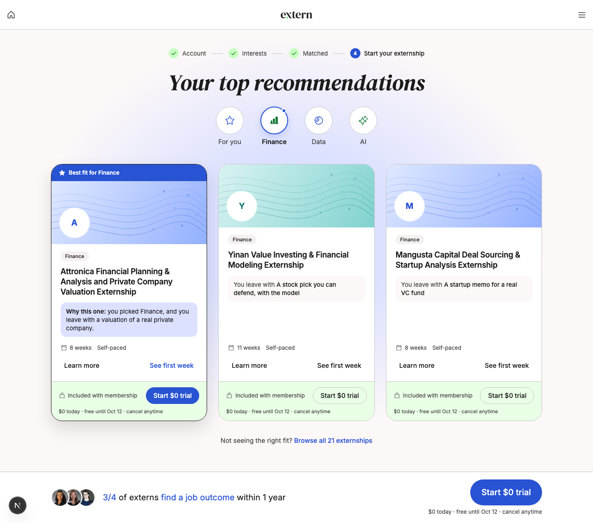
Phone 390
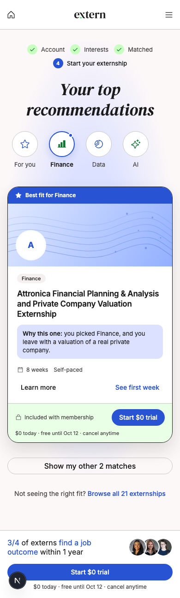
No change. The only difference: every Start $0 trial button now goes to the new confirm screen instead of straight to the card form.
→
2
Project 1 at Attronica
ExistingDesktop 1280
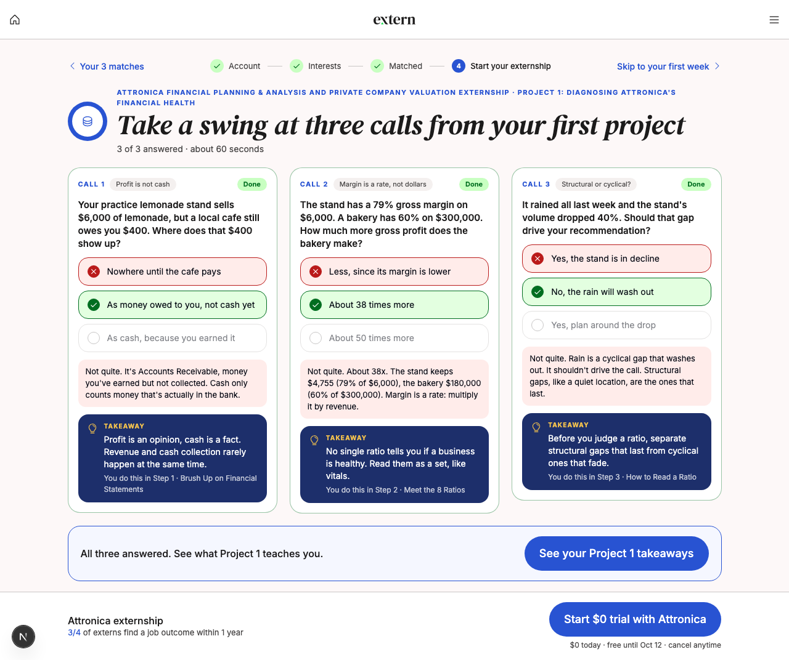
Phone 390
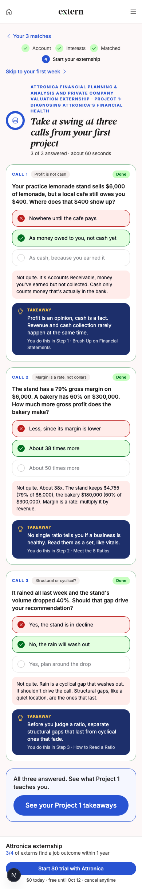
No change. Three quick questions from the real project. This is where people start to decide. The Narrative page doesn't have a step like this, which is part of why it does worse.
→
3
Your Project 1 takeaways
ExistingDesktop 1280
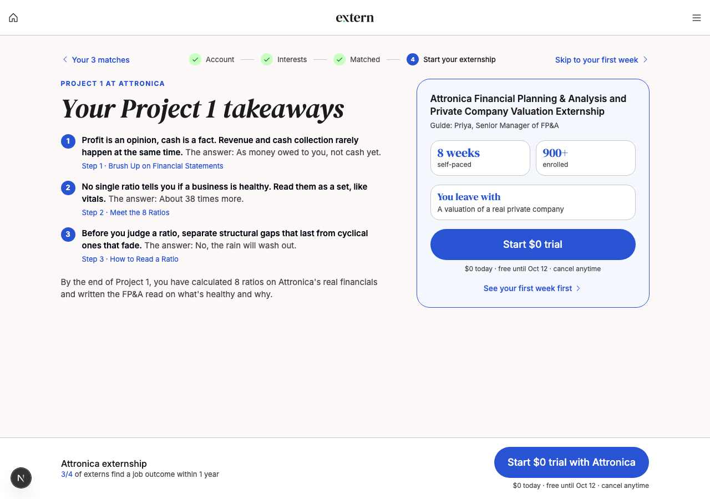
Phone 390
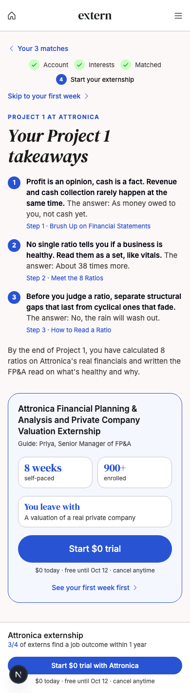
No change. By this point the person has seen what the work is like. Trial buttons clicked here convert about twice as well as buttons clicked while people are still browsing.
→
4
You're starting Attronica
NewDesktop 1280
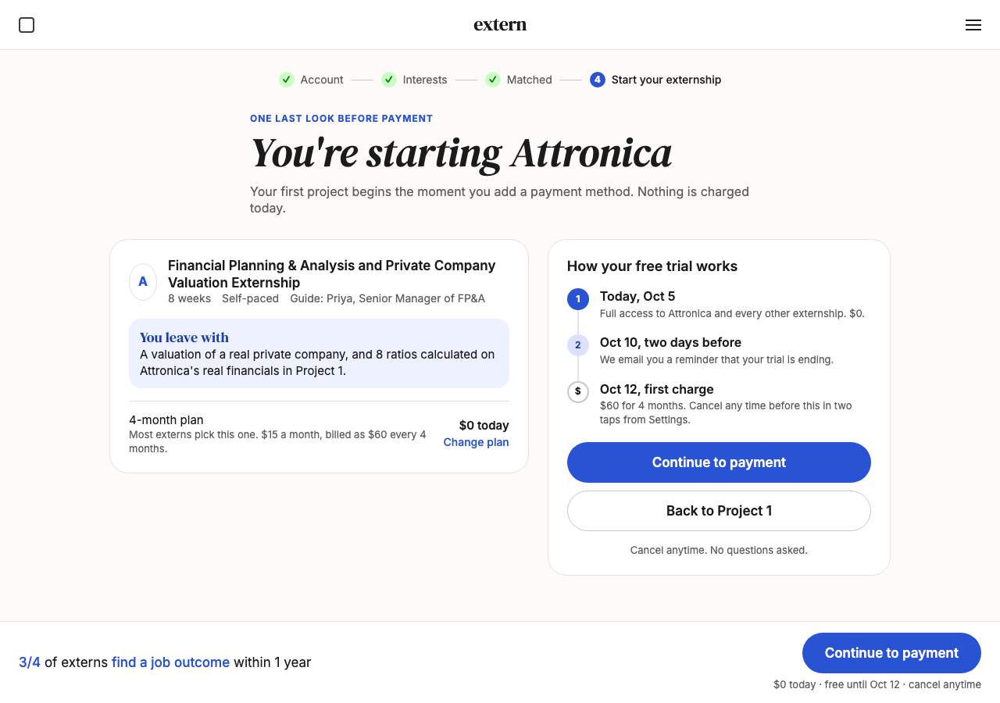
Phone 390
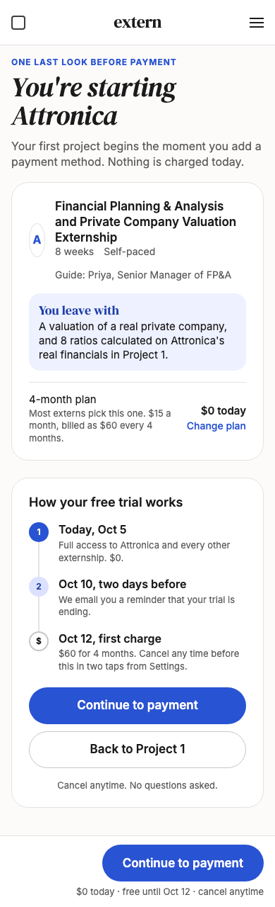
The new screen. Before anyone sees a card form, they see three things: what they're starting, what it costs and when, and that they'll get a reminder before being charged. One button forward, one button back. This does the job the plan picker used to do, without making them pick a plan.
→
5
Checkout
RevisedDesktop 1280
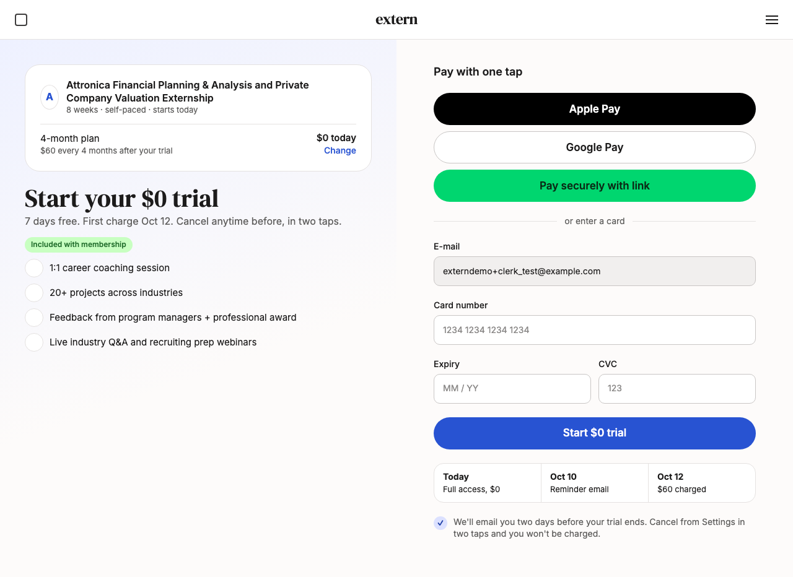
Phone 390
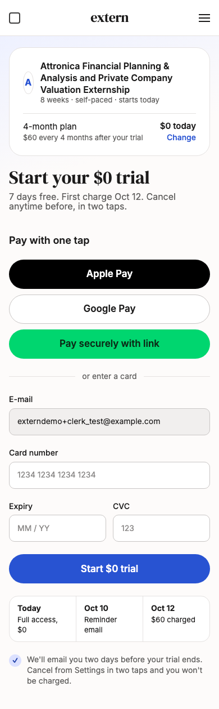
Three changes. Apple Pay and Google Pay come first, so on a phone it's a thumbprint instead of typing a card number. The three plan boxes are gone, since the plan was already confirmed. Under the button: free today, reminder Oct 10, charged Oct 12, and a promise that we'll email before the charge.
→
5b
Checkout today, for comparison
ReplacedDesktop 1280
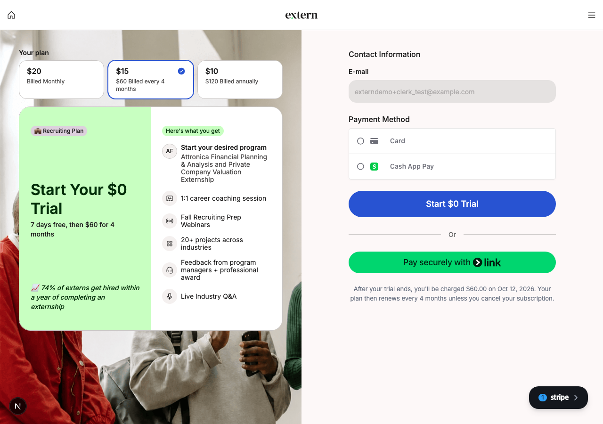
Phone 390

What people see today. Pick a plan again, read a list, type a card. The charge date is the last line on the page. On a phone, the easy pay buttons are below the fold.
The Narrative, as it runs today
Dishita and Vinny's V1, live since Sep 30. Shown for comparison. Nothing here changes until V2 is built.
A
The page
ExistingDesktop 1280
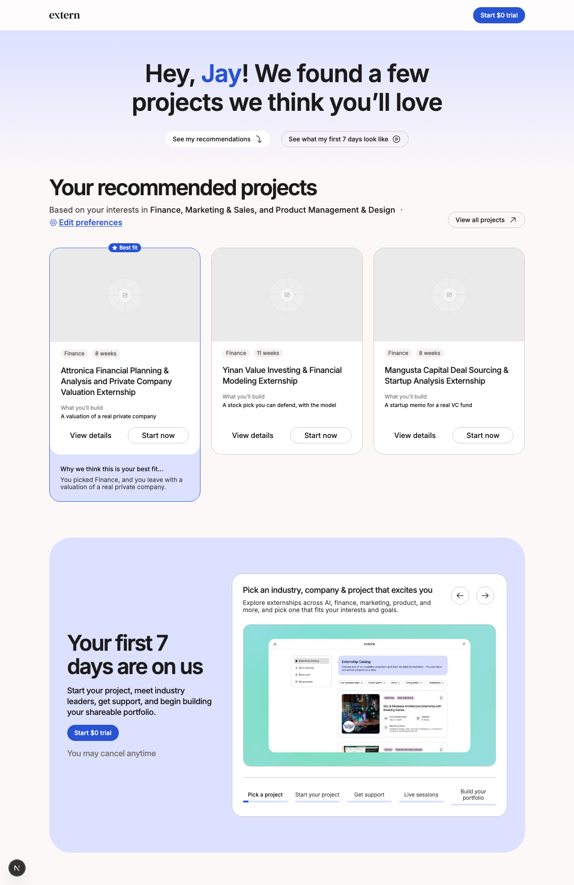
Phone 390
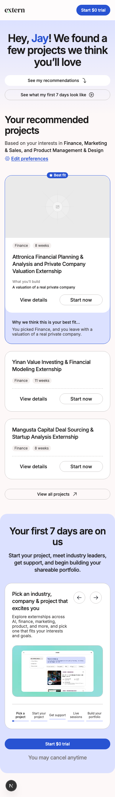
Where the clicks happen. Start now sits on every card, plus Start $0 trial in the top bar and under the first 7 days. 6 in 10 people click one of them. The card buttons get the most clicks and convert the worst.
→
B
View details
ExistingDesktop 1280
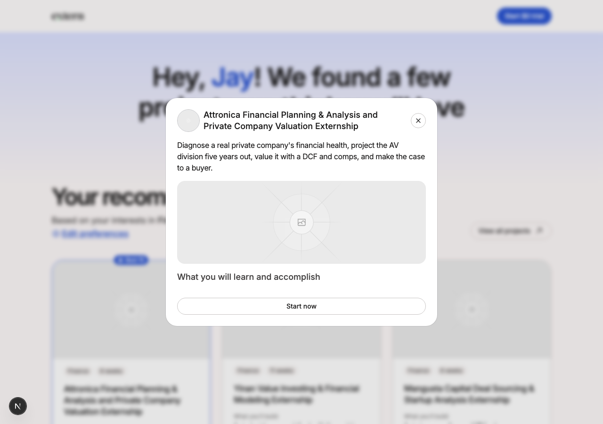
Phone 390
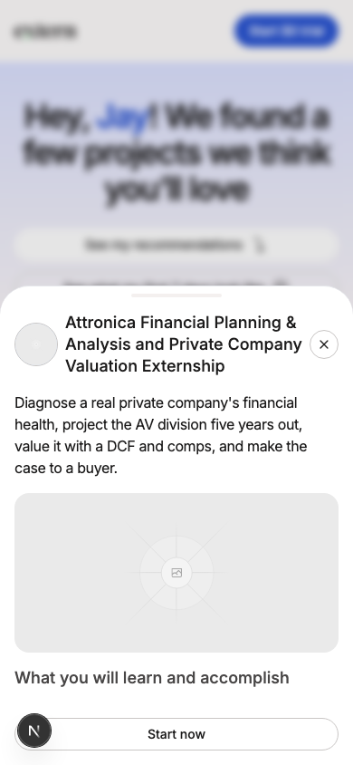
Half of viewers open this. Its only button is Start now, which goes straight to the card form. Those clicks convert worst of all, 17 in 100. People open details to learn more, then get asked to pay.
→
C
View all projects
ExistingDesktop 1280
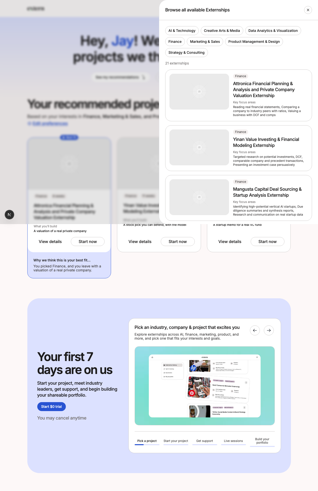
Phone 390
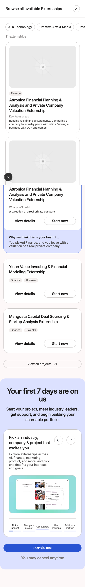
4 in 10 open this. People are still comparing at this point. The page is good at holding attention. It just asks for the card before the comparing is done.
→
D
Checkout
Same as todayDesktop 1280
Phone 390
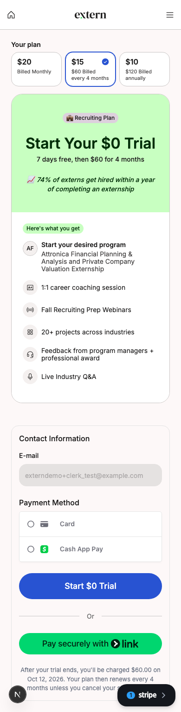
Same checkout as every arm. Only 2 in 10 people who get here from the Narrative enter a card. No screen between browsing and this one did the deciding.
The numbers, if you want them
| Page | Got to checkout | Of those, entered a card | Started a trial |
|---|---|---|---|
| Control, with the plan picker | 33 of 100 | 6 in 10 | 18 of 100 |
| Your Redesign, Project 1 first | 46 of 100 | 3.5 in 10 | 14 of 100 |
| Narrative, no deciding step | 62 of 100 | 2 in 10 | 11.5 of 100 |
| Control without the picker, last week of Sep | 69 of 100 | 2.5 in 10 | 12 of 100 |
The simple version
- Getting people to checkout is easy. Getting them to enter a card is the hard part.
- People enter a card when something before it helped them decide. The plan picker did that. Project 1 does some of it. The Narrative has nothing.
- The new confirm screen is that "decide" moment, without making people pick a plan.
Why not just drop the card?
- Trials that ask for a card turn into paying customers 3 to 4 times more often. We keep the card.
- The fix is to make the card step feel safe: show the dates, promise a reminder, make paying one tap.
What other companies do
- Blinkist shows the trial timeline and promises a reminder. Trial starts went up 23% and complaints dropped by half.
- Coursera and Skillshare put the charge date and a reminder promise right next to the payment field.
Questions for Dishita and Vinny
- On the cards, should Start $0 trial become a smaller link, with See first week as the main button?
- On the confirm screen, is "You leave with" the right thing to show, or should it show the first week?
- On checkout, keep the photo and the long list on the left, or keep it this simple?